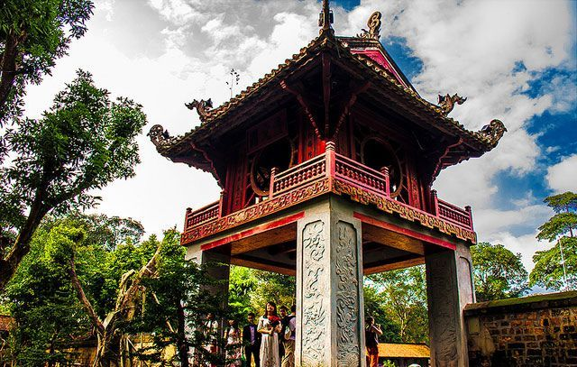
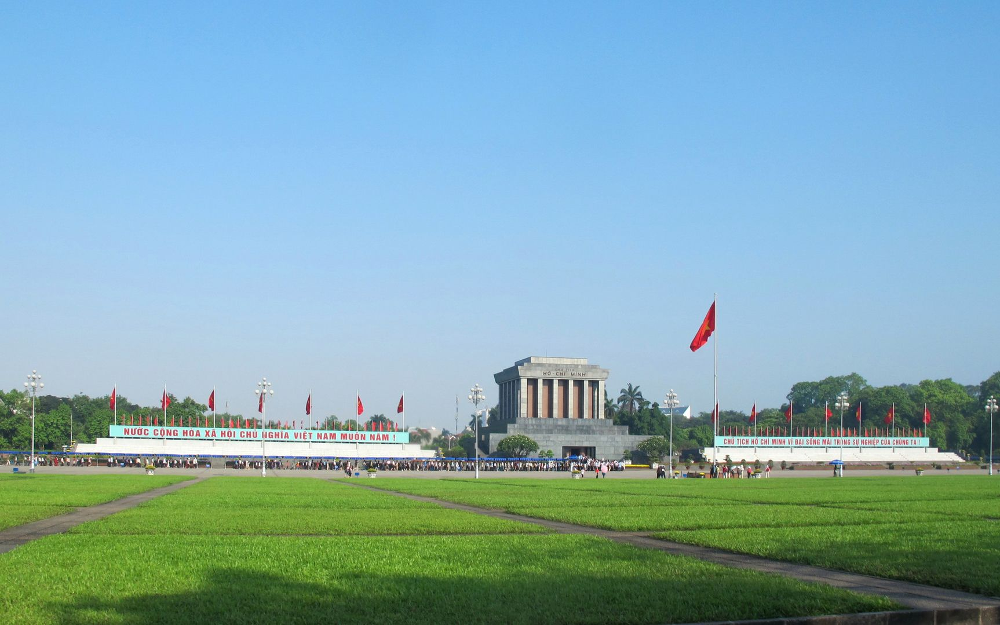
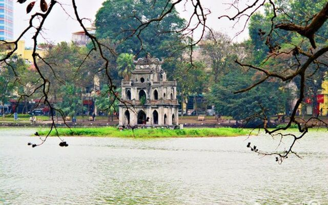

“Điều mơ hồ nhất khi đi giữa những con phố cổ sẽ cảm nhận thấy Hà Nội như một cơ thể sống, có vui buồn, lắng đọng có cảm xúc như một tâm hồn”. Hà Nội - mảnh đất nghìn năm văn hiến mang trên mình nhiều vẻ đẹp và bình dị với nhiều di tích như Hồ Gươm, Cầu Thê Húc, Chùa Quán Sứ, Hồ Tây, 36 phố phường…hay những món đặc sản quá đỗi giản đơn như cốm bọc trong lá sen thơm, Phở, Chả cá Lã Vọng... Hà Nội luôn mang đến nhiều hoài niệm khó phai của Thủ Đô ngàn năm văn hiến...

Văn Miếu Quốc Tử Giám
Nếu kể tên các địa điểm du lịch Hà Nội bậc nhất xưa và nay có lẽ ai cũng sẽ nghĩ ngay đến Văn Miếu Quốc Tử Giám. Đây là một quần thể kiến trúc văn hoá hàng đầu và là niềm tự hào của người dân Thủ đô khi nhắc đến truyền thống ngàn năm văn hiến của Thăng Long,Đông Đô, Hà Nội.Văn Miếu Quốc Tử Giám được xem là biểu tượng của tri thức, của nền giáo dục Việt Nam. Đây là nơi thờ phụng các bậc Tiên thánh, Tiên sư của đạo Nho và Tư nghiệp Quốc Tử Giám Chu Văn An, người thầy tiêu biểu về đạo cao, đức trọng của nền giáo dục Việt Nam.

Quảng trường Ba Đình
Nếu đã đặt chân tới mảnh đất ngàn năm văn hiến thì Lăng Bác – Quảng trường Ba Đình là địa điểm du lịch ở Hà Nội mà các bạn không thể bỏ qua. Nơi đây là trung tâm chính trị của Việt Nam với nhà Quốc hội, Phủ Chủ tịch, Bảo tàng Hồ Chí Minh,…Lăng Bác là nơi lưu giữ thi hài của vị lãnh tụ kính yêu. Bên ngoài lăng là những hàng tre xanh bát ngát. Lăng chủ tích mở cửa vào sáng thứ 3,4,5,7 và chủ nhật. Các bạn lựa chọn khách sạn gần Lăng Bác để tiện cho việc tham quan cũng như đi chơi của mình. Khi vào viếng lăng Bác, bạn chú ý ăn mặc chỉnh tề, không đem theo các thiết bị điện tử ghi hành và giữ trật tự trong lăng.
Quảng trường Ba Đình là quảng trường lớn nhất Việt Nam, nằm trên đường Hùng Vương và trước Lăng Chủ tịch Hồ Chí Minh. Quảng trường này còn là nơi ghi nhận nhiều dấu ấn quan trọng trong lịch sử Việt Nam. Đặc biệt, vào ngày 2 tháng 9 năm 1945, Chủ tịch Chính phủ Cách mạng lâm thời Việt Nam Dân chủ Cộng hòa Hồ Chí Minh đã đọc bản Tuyên ngôn độc lập khai sinh ra nước Việt Nam Dân chủ Cộng hòa. Đây cũng là nơi diễn ra các cuộc diễu hành nhân dịp các ngày lễ lớn của Việt Nam, và cũng là một địa điểm tham quan, vui chơi, dạo mát của du khách và người dân Hà Nội.

Hồ Hoàn Kiếm
Hồ Gươm hay hồ Hoàn Kiếm là một trong những nơi nên đến ở Hà Nội khi du lịch thủ đô. Nằm ở giữa trung tâm, Hồ Gươm được ví như trái tim của thành phố ngàn năm tuổi này.. Mặt hồ như tấm gương lớn soi bóng những cây cổ thụ, những rặng liễu thướt tha tóc rủ, những mái đền, chùa cổ kính, tháp cũ rêu phong, các toà nhà mới cao tầng vươn lên trời xanh. Một trải nghiệm thú vị dành cho khách du lịch là đi bộ một vòng hồ, bạn sẽ được thấy một Hà Nội cổ kính nhưng vẫn đầy hiện đại hiện lên thật rõ ràng. Bên cạnh hồ là những công trình kiến trúc như tháp Bút, đài Nghiên, cầu Thê Húc dẫn vào đền Ngọc Sơn, đền vua Lê Thái Tổ, tháp Hoà Phong,…